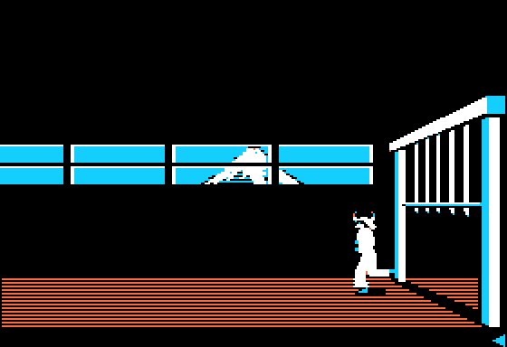
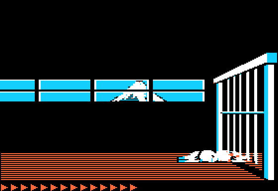
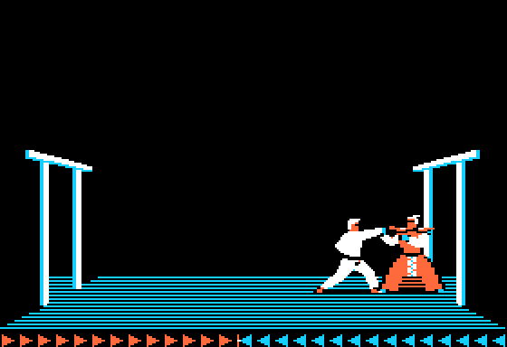
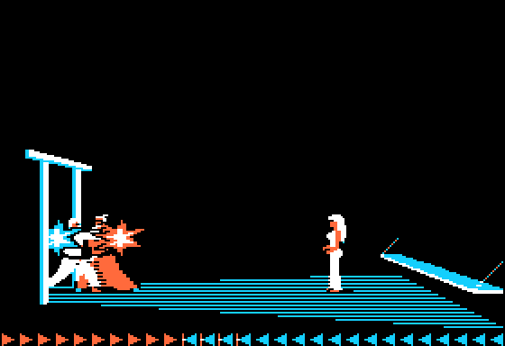
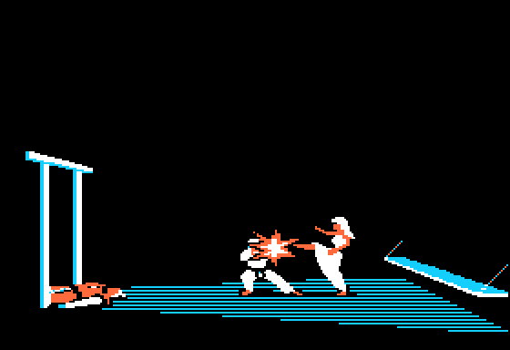
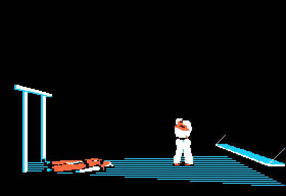
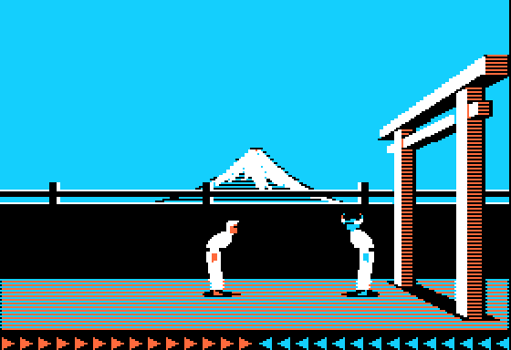
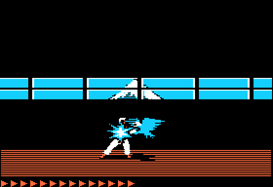
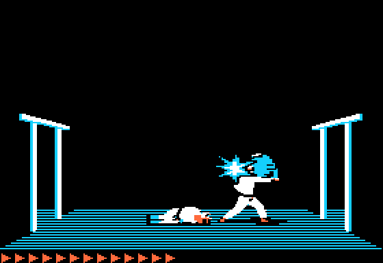

<meta charset="utf-8">
<meta name="viewport" content="width=device-width, initial-scale=1">
<title>Karateka</title>
<link rel="preconnect" href="https://fonts.googleapis.com">
<link rel="stylesheet" href="https://fonts.googleapis.com/css2?family=Lato:wght@400;700;900&family=IBM+Plex+Mono:wght@400;500&display=swap">
<style>
:root{
  --bg:#23262d; --paper:#e9e7e1; --surface:#ffffff; --surface-2:#f1efea; --line:#d5d3cc; --line-soft:#e0ded8;
  --ink:#2f3136; --ink-soft:#55585f; --ink-mute:#80838a;
  --link:#1f5fa8; --link-hover:#154480; --accent:#1f5fa8;
  --amber:#c25a00; --cyan:#1f5fa8; --coral:#d04a3a; --green:#2a8a4a; --violet:#4a5bd6; --hl:#fff0c2;
  --chip:#2f3136; --chip-ink:#ffffff;
  --c64blue:#40318d; --c64grey:#686868;
  --fd:'Lato',system-ui,sans-serif; --fb:'Lato',system-ui,sans-serif; --fm:'IBM Plex Mono',ui-monospace,Menlo,monospace;
  --col:1080px; --gx:68px; --fs:17px; --lh:1.6; --hw:900; --h1:46px; --h2:26px; --sy:48px; --pp:26px; --r:10px;
  --plate-shadow:0 1px 2px rgba(0,0,0,.05),0 4px 14px rgba(0,0,0,.05);
}
*{box-sizing:border-box}
html{background:var(--bg);min-height:100%}
body{background:var(--paper);color:var(--ink);font-family:var(--fb);font-size:var(--fs);line-height:var(--lh);max-width:var(--col);margin:0 auto;min-height:100vh;padding:0 0 4rem}
h1,h2,h3{font-weight:var(--hw);letter-spacing:-.01em;text-wrap:balance;color:var(--ink);margin:0}
.wrap{padding:0 var(--gx)}
.hero{padding:48px var(--gx) 8px;text-align:left}
.eyebrow{font-family:var(--fm);font-size:12px;letter-spacing:.08em;text-transform:uppercase;color:var(--ink-mute);margin:0 0 10px}
.hero h1{font-size:var(--h1);line-height:1.15;letter-spacing:-.02em;margin:0 0 14px}
.hero .sub{margin:0 0 .6em;color:var(--ink-soft)}
section{padding:var(--sy) 0 24px}
section:last-of-type{border-bottom:none}
.fig{font-family:var(--fm);font-size:12px;letter-spacing:.08em;text-transform:uppercase;color:var(--ink-mute);margin:0 0 10px}
h2.t{font-size:var(--h2);margin-bottom:12px}
.lede{color:var(--ink-soft);margin:0 0 30px}
.plate{background:var(--surface);border:1px solid var(--line);border-radius:var(--r);padding:var(--pp);box-shadow:var(--plate-shadow)}
.cap{font-size:14px;color:var(--ink-mute);margin-top:14px;line-height:1.55}
.cap b{color:var(--ink);font-weight:700}
code{font-family:var(--fm);font-size:.82em;background:var(--chip);color:var(--chip-ink);border-radius:4px;padding:2px 6px;white-space:nowrap}

.kd-pair{display:grid;grid-template-columns:1fr 1fr;gap:18px;align-items:start}
.kd-pair img,.kd-one img{width:100%;display:block;border-radius:4px;image-rendering:pixelated;background:#000}
.kd-one{max-width:560px}
.kd-tbl{border-collapse:collapse;font-size:14px;width:100%}
.kd-tbl th,.kd-tbl td{border-bottom:1px solid var(--line-soft);padding:6px 8px;text-align:left;vertical-align:top}
.kd-tbl th{font-weight:700;color:var(--ink-soft);font-size:13px}
.kd-tbl td.n{font-family:var(--fm);text-align:right}
.kd-tbl tr.kd-jmp td{background:var(--hl)}
.kd-scroll{overflow-x:auto}
.kd-bar{display:flex;flex-wrap:wrap;gap:8px;align-items:center;margin:0 0 12px}
.kd-bar button{font:inherit;font-size:13px;padding:5px 11px;border:1px solid var(--line);background:var(--surface-2);color:var(--ink);border-radius:6px;cursor:pointer}
.kd-bar button.on{background:var(--ink);color:#fff;border-color:var(--ink)}
.kd-err{color:var(--coral);font-size:14px}
.kd-code{font-family:var(--fm);font-size:13px;background:#1b1c1f;color:#ddd;border-radius:6px;padding:12px 14px;overflow-x:auto;white-space:pre;line-height:1.55}
.kd-code b{color:#ffcf6b;font-weight:500}
@media (max-width:760px){:root{--gx:16px;--pp:14px}.kd-pair{grid-template-columns:1fr}}
</style>
<!-- tabs -->
<header class="hero">
  <p class="eyebrow">1984 · Brøderbund Software · Apple II</p>
  <h1>Karateka</h1>
  <p class="sub">What the code does that the game never tells the player: a trap with a safe way through, an opening that kills a hero who runs in, a demonstration fighter who cannot aim low, and two pieces of the game that never run.</p>
</header>
<main class="wrap">

<section id="entry-bytes" data-part="">
  <p class="fig">01 · The guards' brain</p>
  <h2 class="t">Secret: a guard's chance of stepping in is read from the stage's own entry jump</h2>
  <p class="lede">When a guard in the stance decides against a blow, a fourth table decides whether he steps in or holds his place. That table has five entries, one for each distance from 7 to 11 columns, and only the first belongs to it. The other four are the stage's entry: the jump the engine takes into the stage, and the stage's number.</p>
  <div class="plate">
    <div class="kd-bar" id="eb-btns"></div>
    <div class="kd-scroll"><table class="kd-tbl" id="eb-tbl"><tr><td class="kd-err">Loading the listings…</td></tr></table></div>
    <p class="cap">The bytes are read from each stage's listing. The brain reads the table as <code>$BFF2</code> + the distance (<a href="source-engine.html#6C35"><code>$6C35</code></a>-<a href="source-engine.html#6C3B"><code>$6C3B</code></a>): a random number below the byte, and the guard steps in.</p>
  </div>
  <p>The brain's four tables sit at the very end of each stage, <code>$BFE1</code> to <code>$BFFD</code>, read as a base plus the distance, and the distance is held to 7 to 11. For the first three tables those reads stay among the stage's thresholds. For the fourth they run from <code>$BFF9</code> to <code>$BFFD</code>: one byte of <code>$80</code>, then <code>JMP $B700</code> at <code>$BFFA</code>, where the engine enters every stage (<a href="source-engine.html#020C"><code>$020C</code></a>), then the stage's number at <code>$BFFD</code>, which the loader checks. A guard holding back 9 columns from the hero never steps in, because the chance is <code>$00</code>, the low byte of <code>$B700</code>. At 10 columns he steps in 183 times in 256, from the high byte, <code>$B7</code>. At 11 the chance is the stage number: 1 in 256 on the cliff, 4 in 256 against Akuma. In the title the jump goes to <code>$B760</code>, so the demonstration's guard holding back at 9 columns steps in 96 times in 256 where every other guard never does.</p>
  <p>Whether the table was meant to be longer, or the entry was moved onto its end, the code does not say. The <a href="index.html#brain">brain calculator</a> on How it works shows the whole decision.</p>
</section>

<section id="portcullis" data-part="palace">
  <p class="fig">02 · The palace</p>
  <h2 class="t">Secret: the portcullis can be sprung from one step short</h2>
  <p class="lede">At the end of the palace hall the portcullis is a trap: it falls whenever the hero stands under it, faster than he can run clear, and it kills him. A punch or a kick thrown from one step short sets it off harmlessly, and he can walk through as it rises.</p>
  <div class="plate">
    <div class="kd-pair">
      
      
    </div>
    <p class="cap">The portcullis up, and fallen on a hero who ran under it. Apple2TS, from the palace's snapshot (<code data-part="">reference/</code>).</p>
  </div>
  <p>While the portcullis is up and still, a living hero at columns <code>$1E</code> to <code>$21</code> sets it falling (<code>$B93D</code>). Falling with its bottom at row <code>$82</code> or lower, it crushes a hero at columns <code>$1F</code> to <code>$21</code> (<code>$B967</code>). There is a second way to set it off: with no guard alive, a hero at column <code>$1D</code> or more who kicks, or punches at full stretch, sets it falling too (<code>$B951</code>), and column <code>$1D</code> is one step short of the place where it crushes him. Sprung that way, it rests for 20 frames and then rises a step a frame, and it is not tested again until it is all the way up. A hero who runs at it while it rises gets through. A hero who comes at it while it is down to row <code>$7C</code> or more bounces off it (<code>$BA1A</code>).</p>
</section>

<section id="akuma-kicks" data-part="akuma">
  <p class="fig">03 · Akuma</p>
  <h2 class="t">Secret: Akuma's first kicks kill a hero who runs into his room</h2>
  <p class="lede">Akuma does not fight by the brain at first. As the hero comes into room 6, Akuma is sent a kick on every frame, and the kicks are never refused and never knocked back. A hero who runs in dies of the first. A hero who comes in the stance is knocked back into room 5, and from then on Akuma fights like any guard.</p>
  <div class="plate">
    <div class="kd-pair">
      
      
    </div>
    <p class="cap">The fight with Akuma, after his opening kicks. Apple2TS, from the last stage's snapshot (<code data-part="">reference/</code>).</p>
  </div>
  <p>Entering room 6 sets <code>$58</code> (<code>$B368</code>). While it is set and the hero lives, the stage sends Akuma the kick command itself (<code>$B8BA</code>), with the count that holds a fighter's blows back after a hit cleared (<code>$24</code>) and his recoil turned off (<code>$5A</code>), so the brain never runs for him (<code>$B895</code>). Going back into room 5 clears <code>$58</code> (<code>$B345</code>). In Apple2TS, from the stage's start with room 5 opened, a hero who ran into room 6 died of the first kick, and one who came in the stance was knocked back into room 5, after which Akuma fought by the brain.</p>
</section>

<section id="mariko" data-part="akuma">
  <p class="fig">04 · Mariko</p>
  <h2 class="t">Secret: Mariko decides at column 19 whether to kick the hero</h2>
  <p class="lede">With Akuma beaten, the hero must come to Mariko standing. Whether she kicks him is settled at one column, and by the pose she took on the frames before.</p>
  <div class="plate">
    <div class="kd-pair">
      
      
    </div>
    <p class="cap">The hero who came in the stance, and the one who came standing. Apple2TS, from the last stage's snapshot (<code data-part="">reference/</code>).</p>
  </div>
  <p>Once Akuma is beaten, Mariko's routine (<code>mariko_last</code>, <code>$BB05</code>) looks at the hero once a frame. Left of column <code>$13</code> (19), she holds out an arm (pose <code>$20</code>) while he stands and takes another pose (<code>$24</code>) while he is in the stance. At column 19 or more, if her arm is not out, she kicks (pose <code>$21</code>), and the kick kills him (<code>$B91D</code>). If it is out, the embrace begins at column <code>$16</code> (22): twenty steps of her poses from a table (<code>$BB72</code>), and then the closing words.</p>
</section>

<section id="bow" data-part="engine">
  <p class="fig">05 · Bowing</p>
  <h2 class="t">Secret: bow to a guard 13 columns away and he bows back</h2>
  <p class="lede">The manual lists B for a bow. A guard who is standing, not yet in the stance, answers it with a bow of his own, as long as the hero is 13 columns away or more.</p>
  <div class="plate kd-one">
    
    <p class="cap">The hero bowing on the cliff, and the guard 13 columns off bowing back. Apple2TS, from the cliff's snapshot (<code data-part="">reference/</code>).</p>
  </div>
  <p>A guard standing still is handled by the first part of the brain (<code>$6B56</code>). Nearer than 13 columns, or with the hero in the stance, he takes the stance himself. Otherwise, when the hero's legs are in the bow's sequence (<code>$65</code> = <code>$1A</code>), the guard is sent the bow command, <code>$C2</code>, and runs the same poses, <code>$0B</code>, <code>$0C</code> and <code>$0D</code>.</p>
</section>

<section id="demo-low" data-part="title">
  <p class="fig">06 · The demonstration</p>
  <h2 class="t">Bug: the demonstration's hero never aims a low blow</h2>
  <p class="lede">The fight that plays itself at the title has a brain of its own for the hero. Its choice of height has one branch the wrong way round, so his blows are high two times in three, middle the third, and never low.</p>
  <div class="kd-code">engine $6C80   CMP #$55   ; the guards' height
engine $6C82   <b>BCS</b> $6C88    ; $55 or more: test against $AA
engine $6C84   LDA #$FF   ; below $55: high
               ...
engine $6C88   CMP #$AA   ; below $AA: middle, else low

title  $A0B2   CMP #$55   ; the demonstration hero's height
title  $A0B4   <b>BCC</b> $A0BA    ; below $55: test against $AA
title  $A0B6   LDA #$FF   ; $55 or more: high
               ...
title  $A0BA   CMP #$AA   ; reached only below $55, so always below $AA: middle</div>
  <p>The guards' routine (<a href="source-engine.html#6C71"><code data-part="">$6C71</code></a>) gives high below <code>$55</code>, middle below <code>$AA</code> and low above. The demonstration's (<a href="source-title.html#A0AF"><code data-part="">$A0AF</code></a>) branches to the second test with BCC where the guards' branches with BCS, so the test against <code>$AA</code> is reached only with numbers below <code>$55</code>, which always pass it. A low blow would need a number of <code>$AA</code> or more there, and none can arrive.</p>
</section>

<section id="hawk" data-part="dungeon">
  <p class="fig">07 · The hawk</p>
  <h2 class="t">Secret: the dungeon's hawk can be killed, the palace's only driven off</h2>
  <p class="lede">In the palace, a hawk struck by a kick or a punch flies off and comes back later. In the dungeon the hawk is the last opponent, with arrows of its own, and the last blow brings it down in a burst of feathers.</p>
  <div class="plate">
    <div class="kd-pair">
      
      
    </div>
    <p class="cap">The palace's hawk struck, and the dungeon's. Apple2TS (<code data-part="">reference/</code>).</p>
  </div>
  <p>Kicking open room 4's doorway brings the hawk in as the opponent (<code>hawk_comes</code>, <code>$BA62</code>: <code>$4D</code> = 5). Beating the guard before it has already set the hero's most arrows to 23 and the hawk's to 5, and the hawk's never come back (<code>$B820</code>). Each strike costs it an arrow (<code>hawk_move</code>, <code>$A806</code>), and with the last it falls as three pictures of feathers (<code>$A876</code>). While it lives the hero cannot leave room 4 (<code>$B362</code>). The palace's hawk is never an opponent: struck, it only turns and flies off to the right (<a href="source-palace.html#B589"><code data-part="">$B589</code></a>).</p>
</section>

<section id="step-back" data-part="engine">
  <p class="fig">08 · Code that never runs</p>
  <h2 class="t">Secret: the guards were given a step back, and never take it</h2>
  <p class="lede">The guards' brain holds a step back, complete and correct. There is no jump or branch to it, so a guard in the stance never retreats.</p>
  <p>Seven bytes at <code>$6C4B</code>, <code>LDA #$FF</code>, <code>STA $29</code>, <code>JMP $6540</code>, would set the stick backwards (<code>$29</code> = <code>$FF</code>) and carry out the command, as the step forward does with <code>$29</code> = 1. They sit between a <code>JMP</code> (<code>$6C48</code>) and the step forward (<code>$6C52</code>), and there is no jump or branch to them in any of the six parts. The demonstration's own hero does step back: its brain is a separate routine in the title (<a href="source-title.html#A000"><code data-part="">$A000</code></a>).</p>
</section>

<section id="one-arrow" data-part="engine">
  <p class="fig">09 · Code that never runs</p>
  <h2 class="t">Secret: a cheat that leaves the opponent one arrow has lost its key</h2>
  <p class="lede">Among the handlers of the special keys is one that sets the opponent's arrows to one and beeps, as the other special keys beep. There is no key that runs it.</p>
  <p>The handler is <code>LDA #1</code> and <code>STA $B7</code> at <code>$7742</code>, then a branch to the beep the other keys share (<code>$771F</code>). There is no key test, jump or branch to it in any of the six parts, so it reads as a cheat whose key was taken out. Which key it once answered is not in the code.</p>
</section>

<section id="hem" data-part="akuma">
  <p class="fig">10 · The last stage</p>
  <h2 class="t">Bug: one of Akuma's pictures lands on a jump in the dungeon's code</h2>
  <p class="lede">The last stage loads over the dungeon's code, and one of its pictures is a byte longer than the space before <code>$B000</code>. Its last byte lands where the dungeon keeps a jump.</p>
  <p>The picture is a mask for the foot of Akuma's robe (<code>$AFE4</code>), 9 rows of 3 bytes, so it ends at <code>$B000</code>. In the dungeon, <code>$B000</code> is <code>JMP $B006</code>, the routine that draws the stairs. In the last stage it is <code>$AA</code>, then the dungeon's <code>$06</code> <code>$B0</code>: read as code, <code>TAX</code> and <code>ASL $B0</code>, which would double the hero's most arrows. <code>$B000</code> is called only on the first screen of a stage (<code>$44</code> = 0), and the hero cannot get back there in the last stage: room 1's door is shut behind him, and the stage keeps him at column 7 or more in the first room (<code>$BA01</code>).</p>
</section>

</main>
<footer style="margin:16px 0 0;padding:22px var(--gx) 0;border-top:1px solid #e0ded8;font-family:'IBM Plex Mono',ui-monospace,Menlo,monospace;font-size:12px;color:#80838a"><a href="https://github.com/gamesexplained/gamesexplained" style="color:#1f5fa8;text-decoration:none">GitHub</a> · <a href="https://discord.gg/3V9GWyRDWV" style="color:#1f5fa8;text-decoration:none">Discord</a><br>© Games Explained contributors. Write-ups, facts and symbol maps are available under <a href="https://creativecommons.org/licenses/by-sa/4.0/" style="color:#1f5fa8;text-decoration:none">CC BY-SA 4.0</a>; code under <a href="https://opensource.org/licenses/MIT" style="color:#1f5fa8;text-decoration:none">MIT</a></footer>
<script src="../../lib/apple2.js"></script>
<script>
(async function () {
  const tbl = document.getElementById('eb-tbl'), btns = document.getElementById('eb-btns');
  const hex = (v, n = 2) => '$' + v.toString(16).toUpperCase().padStart(n, '0');
  if (!globalThis.Apple2) { tbl.innerHTML = '<tr><td class="kd-err">This table needs the built site (missing: apple2.js).</td></tr>'; return; }
  const PARTS = [['title', 'The title’s demonstration'], ['cliff', 'The cliff'], ['palace', 'The palace'], ['dungeon', 'The dungeon'], ['akuma', 'Akuma’s chamber']];
  const Ls = {};
  try { await Promise.all(PARTS.map(async ([p]) => { Ls[p] = await Apple2.load(`parts/${p}/listing.json`); })); }
  catch (e) { tbl.innerHTML = `<tr><td class="kd-err">The listings did not load: ${e.message}</td></tr>`; return; }
  const WHAT = ['the table’s own byte', 'the JMP instruction', 'the low byte of the jump’s address', 'the high byte of the jump’s address', 'the stage’s number'];
  function show(part) {
    [...btns.children].forEach(b => b.classList.toggle('on', b.dataset.p === part));
    const m = Ls[part].ram;
    tbl.innerHTML = '<tr><th>Distance</th><th>Read from</th><th>Byte</th><th>What the byte is</th><th>Steps in, of 256</th></tr>' +
      [7, 8, 9, 10, 11].map((d, i) => `<tr class="${i ? 'kd-jmp' : ''}"><td class="n">${d}</td><td><a href="source-${part}.html#${(0xBFF2 + d).toString(16).toUpperCase()}"><code>${hex(0xBFF2 + d, 4)}</code></a></td>` +
        `<td class="n">${hex(m[0xBFF2 + d])}</td><td>${WHAT[i]}</td><td class="n">${m[0xBFF2 + d]}</td></tr>`).join('');
  }
  for (const [p, name] of PARTS) {
    const b = document.createElement('button'); b.type = 'button'; b.textContent = name; b.dataset.p = p;
    b.onclick = () => show(p); btns.appendChild(b);
  }
  show('cliff');
})();
</script>
